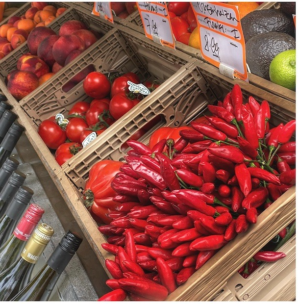

Die Münchner Wochen- und Bauernmärkte bieten hochwertige Produkte aus der Region und ein Einkaufserlebnis im eigenen Viertel.
Eine schöne Übersicht über die Münchner Wochenmärkte findet ihr auf muenchnerwochenmaerkte.de des Kommunalreferats der Stadt München.
